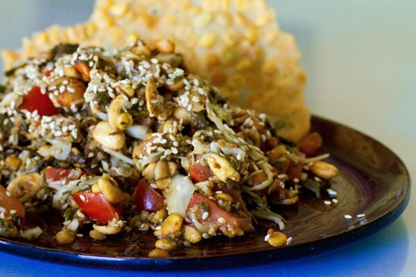

Home Page
Mohinga
Shan Noodle
Laphat Thoke

Laphat Thoke, Burmese pickled tea leaf salad
Laphat thoke, also known as Burmese tea leaf salad,
is a traditional dish from Myanmar made with fermented or pickled
tea leaves as its key ingredient. The tea leaves are mixed with crunchy
elements like fried beans, roasted peanuts, sesame seeds, garlic chips,
and fresh vegetables such as shredded cabbage and tomatoes.
This salad is typically seasoned with lime juice, fish sauce or soy sauce,
chili, and a drizzle of oil, resulting in a tangy, savory, umami-rich,
and texturally complex dish. Laphat thoke is often served as a snack or
appetizer during meals and holds cultural importance in Myanmar.
Ingredients
- Fermented or pickled tea leaves
- Shredded cabbage or lettuce
- Tomatoes (diced or sliced)
- Fried garlic chips
- Roasted peanuts
- Fried yellow split peas or lentils
- Toasted sesame seeds
Steps
- Prepare or buy fermented/pickled tea leaves.
- Toast peanuts, sesame seeds, and split peas or lentils; fry garlic chips.
- Chop cabbage, tomatoes, and green chili.
- Arrange vegetables and crunchy toppings on a plate with tea leaf dressing in the center.
- Drizzle with fish sauce or salt, squeeze lime, and toss everything together just before serving.